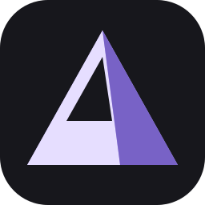
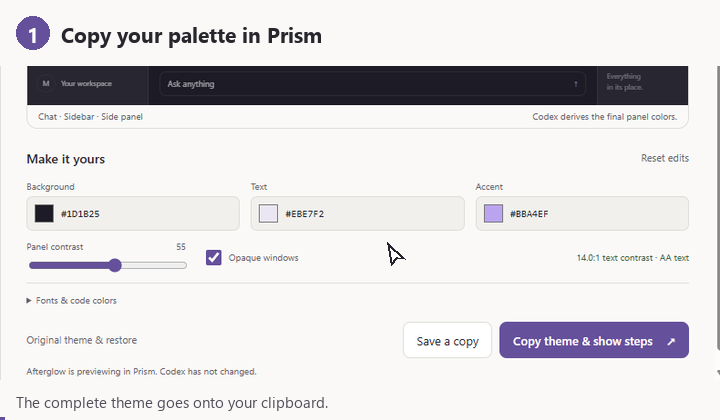

Updated the setup instructions.
Select a background to load its image and settings.
Prism stays in the tray when its window closes. Use Quit beside Settings to stop it.
Use Open Codex to start a background session. The normal Codex shortcut does not enable backgrounds.
Apply saves your settings and restores the background after Codex reloads. Remove stops restoration. Images and history stay on this computer.
Choose an installed font.
Paste a theme from Codex’s Appearance → Copy theme, or open a saved text file.
Save these colors and fonts under a name in your library.
Theme copied to your clipboard.

This copies colors and fonts. Your background is managed separately in Prism → Backgrounds. Use Save theme to keep the colors and fonts in your library.
In Codex, copy your current theme before changing it. Keep a separate backup for light and dark.
Restore copies the saved theme. Finish by importing it in Codex. Prism never reads your conversations or changes Codex files.
Name this image and its settings so you can load them from History later.
Windows lists this Codex app as ChatGPT.exe. Closing its windows can leave it running.
End task interrupts running work and can lose unsaved changes. Only end the listed ChatGPT.exe processes; another ChatGPT app may use the same name.
Keep Prism running, then use Open Codex.